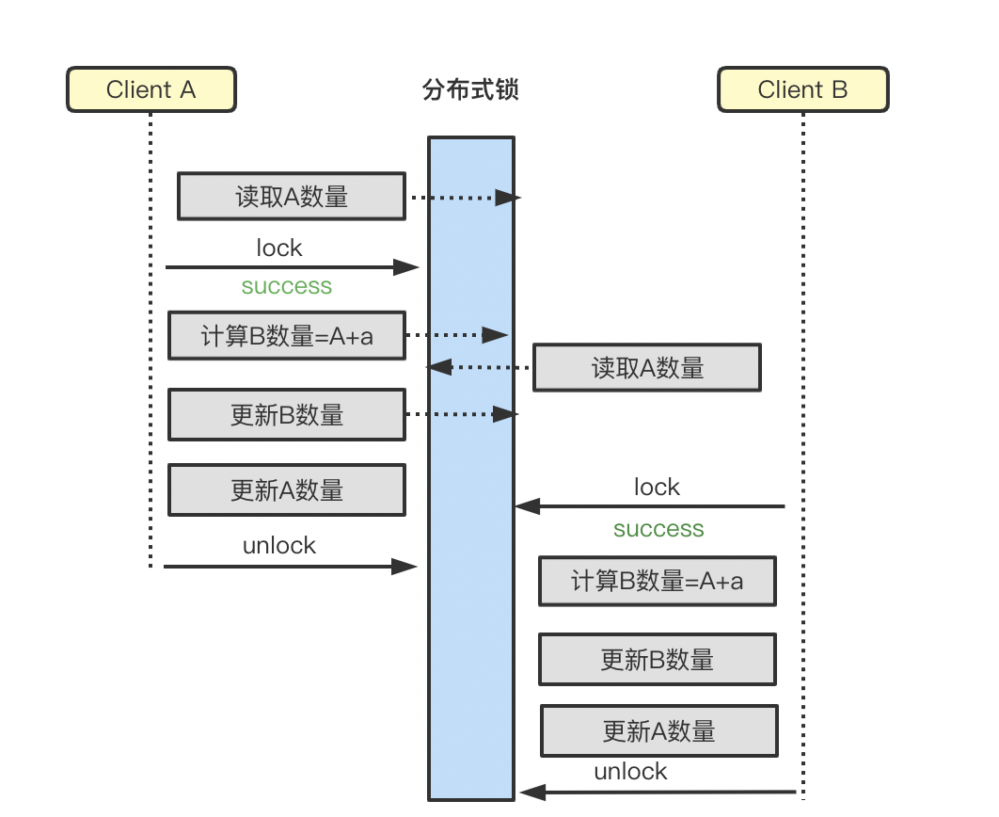

一 背景
并发问题是电商系统最常见的问题之一，例如库存超卖、抽奖多发、券多发放、积分多发少发等场景；之所以会出现上述问题，是因为存在多机器多请求同时对同一个共享资源进行修改，如果不加以限制，将导致数据错乱和数据不一致性；解决并发问题的方式有很多，例如：队列、异步、响应式、锁都可以；由于当前互联网都是分布式系统，因此本文只针对使用较为广泛的分布式锁的方式来进行叙述如何进行质量保障。
二 分布式锁介绍
1 什么是分布式锁
先了解一下什么是锁，在单机系统中，多个线程同时改变一个变量时，需要对变量或者代码块做同步从而保证串行修改变量，该同步实质上就是通过锁来实现。为了实现多个线程在同一个时刻针对同一块代码串行执行，就需要在某个地方做个标记，该标记必须每个线程都能看到，当标记不存在时可以设置该标记，其余后续线程发现已经有标记了则等待拥有标记的线程结束同步代码块取消标记后再去尝试设置标记，此标记可以理解为锁。分布式锁就是在多机系统下的该标记。
2 实现分布式锁的主流方式
目前分布式锁的实现方式有3种主流方法，即：
基于数据库实现分布式锁，此处的数据库指的是MySQL关系型数据库
- 基于MySQL锁表
- 数据库版本号乐观锁
基于缓存实现分布式锁，此处的缓存指的是Redis
基于zookeeper/etcd实现分布式锁
具体的关于锁的实现方式，已经有太多的文章进行介绍，本文就不再赘述。
三 质量保障
并发问题一旦涉及到钱，通常都会导致不同程度的资损，而且在我们的功能测试中是很难发现，因此对于并发的质量保障显得尤为的重要，可以抽象为3层来保障：事前、事中、事后三大步骤；事前保障通过Review 方式提前规避技术上的风险，事中保障验证在技术实现过程中是否存在漏洞，事后保障校验数据是否符合预期，对于有并发风险的项目上述三个步骤的保障缺一不可。
1 事前质量保障
事前保障的阶段发生在技术评审阶段，在此阶段，我们需要评估出当前业务场景下是否存在并发风险；如果存在，确定我们的技术选型。
评估并发风险
评估并发风险的关键点在于是否存在多个进程同时访问共享资源，简单来说是否存在多个进程在同一时间对同一个数据进行更新的操作；例如：电商中的库存，多人同时购买同一个商品，也就是会存在同一时间对同一个商品的库存进行更新，此处就存在并发风险。
技术选型
要做到正确的技术选型，我们就需要对上述3种方式实现的锁的优缺点以及应用场景需要进行了解。
| 实现方式 | 优点 | 缺点 | 应用场景 |
|---|---|---|---|
| MySQL数据库表 | 易于理解/易于实现 | 容易出现单点故障、死锁性能低/可靠性低 | 适用于并发量低、性能要求低的场景 |
| Redis分布式锁 | 性能高/易于实现可跨集群部署，无单点故障 | 锁失效时间的控制不稳定稳定性低于ZooKeeper | 适用于高并发、高性能场景 |
| ZooKeeper分布式锁 | 无单点故障/可靠性高不可重入/无死锁问题 | 实现复杂性能低于缓存分布式锁 | 适用于大部分分布式场景，除对性能要求极高的场景 |
MySQL数据库表的乐观锁适用于读多写少的场景且共享资源为数据库的单行数据；MySQL表锁实现的锁一般都不推荐使用；ZooKeeper分布式锁虽然适用于大部分分布式场景，但是由于其实现复杂度相对较高以及需要额外引入中间件，在大部分业务场景中的应用比较少，而基于Redis的缓存分布式锁应用较为广泛；但是具体业务实现采用哪种类型的分布式锁，还是需要基于当前的业务特性来进行决定；
在技术评审阶段，一方面我们要评估出是否存在并发风险，另外一方面，我们需要识别开发同学在技术的实现上可能存在的漏洞，针对分布式锁的实现漏洞可参考下文的CodeReview的关注点。
2 事中保障
CodeReview
1）Redis缓存分布式锁
Redis通常可以使用setnx(key,value)函数来实现分布式锁。key和value就是基于缓存的分布式锁的两个属性，其中key表示锁id。setnx函数返回1表示获得锁，返回0表示其他服务器已经获得了锁;
- Redis缓存分布式锁CodeReview注意点
1、Redis Key
全面梳理业务场景，对于同一共同资源，key要保持一致；
key是识别共享资源的唯一键，key的设计既需要能够锁住当前共享资源又不能影响到其他资源；
例如：商品库存，我们的key应该是具体到某个商品，而不是所有商品，锁住A商品，不会影响B商品。
2、锁释放
锁一定需明确释放，try/finally 结构加锁解锁，finally内释放锁;
锁只能被加锁的对象释放，此处是经常出问题的点，如下图所示，A加锁被B释放锁，导致锁失效，锁被C抢占到；
针对上述问题，释放锁时需要先读取当前key的value,再和传入的value进行比较；上述是两个步骤一定要保证原子性,如果原生Redis可采用lua脚本保证原子性；如果tair，可采取TairString的cad方法；value必须是一个唯一值，唯一标记是当前对象加的锁。
3、锁超时
一定要设置key的超时时间；例如:客户端A 抢到锁后，系统突然异常，A就无法释放锁，变成死锁；设置超时时间就是为了防止此种情况发生，在时间到期后，自动删除key，间接释放锁;
超时时间的设置一般来讲大于服务的最大执行时间即可，但是服务最大的执行时间会受很多因素影响，是不可控的；例如：A服务一般执行时间是30ms，设置的锁超时时间为100ms，受网络影响服务执行时间变成了200ms，在100ms的时候锁就会被释放了；在大部分场景下，开发不会处理此种情况，此种极端情况是否需要处理，需要进行协商；处理方式如下2种：
可以再开启一个线程，为当前超时时间续时，但增加了系统的复杂度；
将过期时间设置非常长，一定能保证逻辑在锁释放之前能够执行完成；此方案简单但是有缺陷，当遇到系统突发异常时，锁无法被释放，只能等待redis key超时，而超时时间又设置的较长，因此在当前时间内谁都无法获取到锁，阻断业务执行，很有可能造成故障；
4、锁粒度
如果针对某个共享资源的写是基于另外一个共享资源的值计算而来，那么锁的范围必须包含读共享资源；范围不包含读共享资源会导致脏读，最终导致数据的错误，如下图所示，Client B最终计算的B的结果就是错误的。

5、获取锁失败
由于其他线程已经获取到了锁，当前线程获取锁失败后有3种处理方式：异常抛出让用户重试；通过自旋再次进行抢锁；发布订阅，订阅锁释放消息；在并发度低的场景下异常抛出以及自旋抢锁都可以，在高并发场景下异常抛出和自旋抢锁都不可取。
2）MySQL数据库锁CR点
- 数据库版本号乐观锁
在数据库的表中需要包含一个数字类型的字段version，读取数据时把version字段读出来，更新数据时判断当前version是否等于读取出来的version，并对当前version+1；如果等于就更新成功，不等于表示数据已过期更新失败。例如以积分体系为例，存在多种场景增加积分，通过乐观锁来保证数据的正确性。
乐观锁CR注意点:
- where 条件一定要命中索引(最好是主键或者唯一索引)，否则会锁表；
- update table set 中必须要包含version = version + 1；
- update 返回结果为0时，一定要根据业务场景进行相应的处理，自主重试或者抛异常；
基于MySQL锁表
其实现原理是：创建一张锁表，对临界资源做唯一性约束，通过增加一条记录对某一资源上锁，释放锁时删除记录；一般不推荐此种用法。
并发测试
并发测试总体上可以分为3大类
复杂的并发场景，一次请求共享资源存在多个，且前后存在各种依赖关系，此种场景适合于链路级别压测，压测模型需要精心设计。
单一并发场景，一个共享资源，可以处理多次，例如：扣除某个商品的库存，可以反复调用。
- 可以通过接口压测的方式进行测试，通过查看最终数据是否会存在与预期不一致情况即可；
- 压测工具：jmeter 即可进行压测（集团可直接采用pas-server进行压测，方便快捷）；
单一并发场景，一个共享资源，且只能处理1次，例如：用户只有一次抽奖机会，连续点2次会不会抽2次；
- 可以利用JVM的并发函数CountDownLatch，CyclicBarrier等，CountDownLatch片段代码：
1 | public void invokeAllTask(ConcurrencyRequest request, Runnable task) { |
- 利用jmeter的定时器 Synchronizing Timer也可以实现此功能
3 事后保障
数据对账
数据对账(数据一致性校验)是我们在系统上线后对并发问题的最后一道防线，通过对账来识别我们的数据的不一致性问题；压测有成本，且受技巧熟练度和压测设计的影响，不一定能暴露问题；如果被测场景评估并发问题的发生概率极低，即使发生了影响也比较小，此时review+对账方式也不失为一种好的选择；
如何进行对账，不同的业务场景有不同的对账方法，例如：
互动积分体系每个用户的扣除以及增加积分都会落流水表；每个用户目前有多少积分都会放在积分表；只需要把流水表的积分加总和积分表的积分进行对账；
互动任务体系，一笔订单只能推进一个任务，对账只需要检查任务记录中一笔订单是否存在多条记录；
1 | select count(*) as task_count, |
四 总结
作为质量保障同学一定要时刻绷着一根弦，当前场景下是否会存在并发问题；并发问题的识别简单而言就是是否存在同时更新同一个数据，如果是就一定要注意开发同学是否处理了并发，并发的实现主要是上面阐述的几种，然后按照场景进行分析即可；关于并发场景的质量保障，大体原则可以概括为如下：
- 梳理并发场景
- 带着注意点CR 代码
- 并发测试(非银弹，不是所有场景都具备可测性)
- 监控对账进行兜底识别并发问题

...
...
Copyright 2021 sunfy.top ALL Rights Reserved